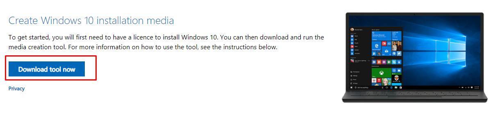
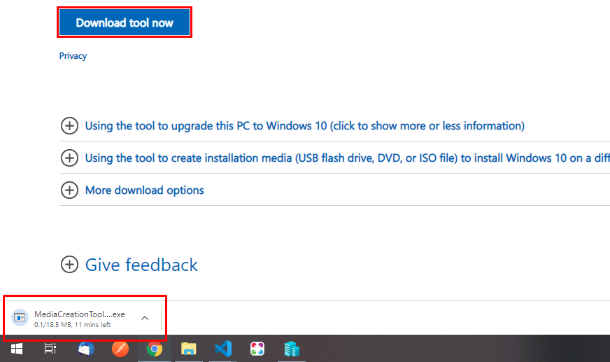
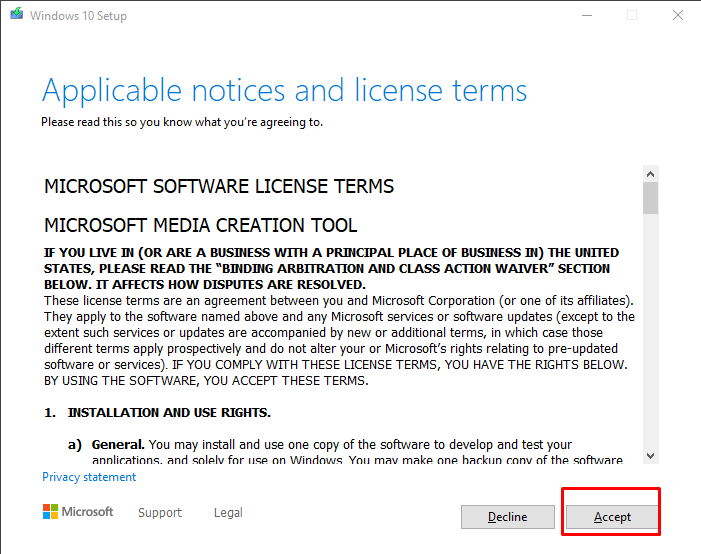
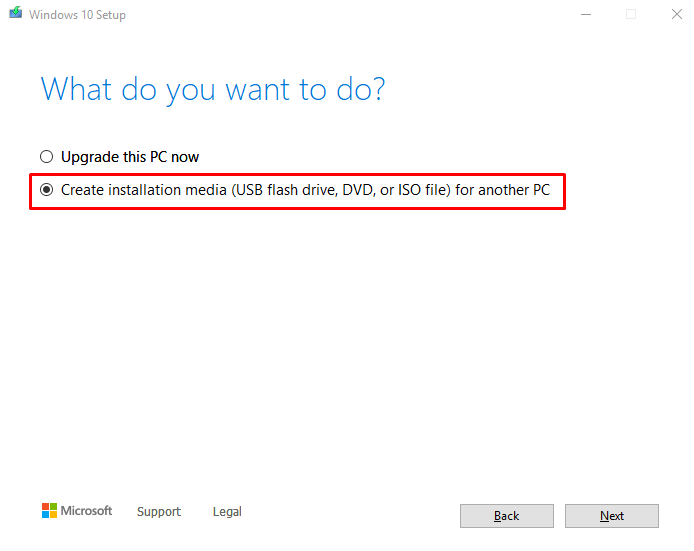
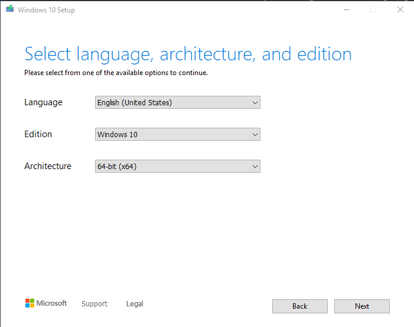
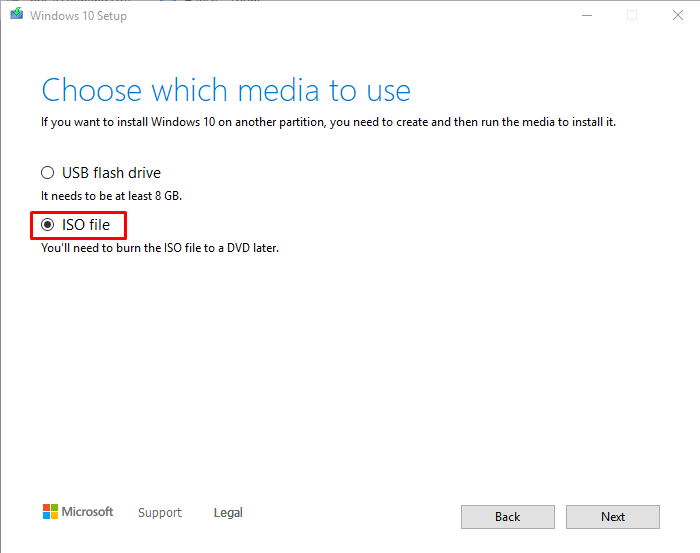
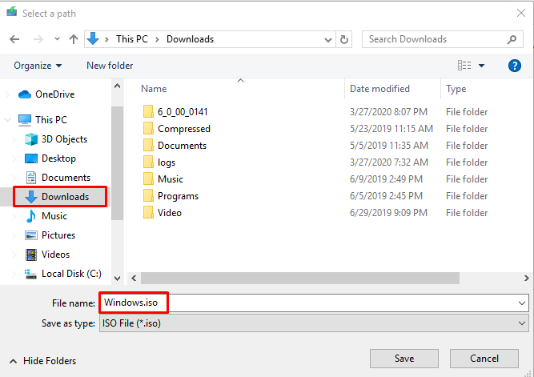

Download of the windows iso file is easy and provided by its official windows website. You just need to download its media download tool and need a working licence key (No need for just download, you can install an non activate windows also). So the steps for the download iso is follows.
1. Go to microsoft download page here: https://www.microsoft.com/en-in/software-download/windows10
2. Scroll down to the "Create Windows 10 installation media" section and look for the button or link called Download tool or media creation tool.

3. After click on the button you should see the MediaCreationTool.exe start download in the browser tray. let the download complete

4. After download complete launch the setup by direct click on it or by visiting to the download location of the .exe file. Once you click the exe wait for the things to be ready until you see the terms screen like below.

5. Click on the Accept button and on the next screen select "Create installation media (USB flash drive, DVD, or ISO file) for another pc" and click on next button

6. On the next screen select you preferred language and system architecture and click on next button

7. On the next screen choose what media to use. In your case it should be ISO file because we need to download the iso file for future use.

8. When you click on the next button it will ask you to save the .iso file in which location, just select your preferred location and save the windows.iso image. It should download in and hour or couple of minutes that depends on you internet speed.

Enjoy!